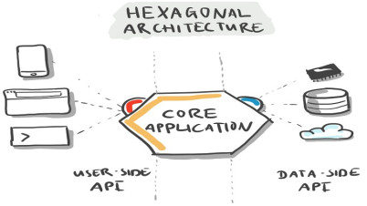
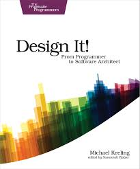
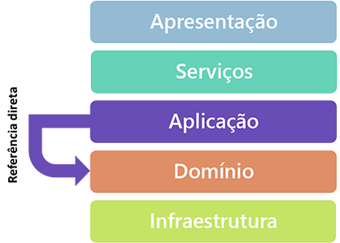
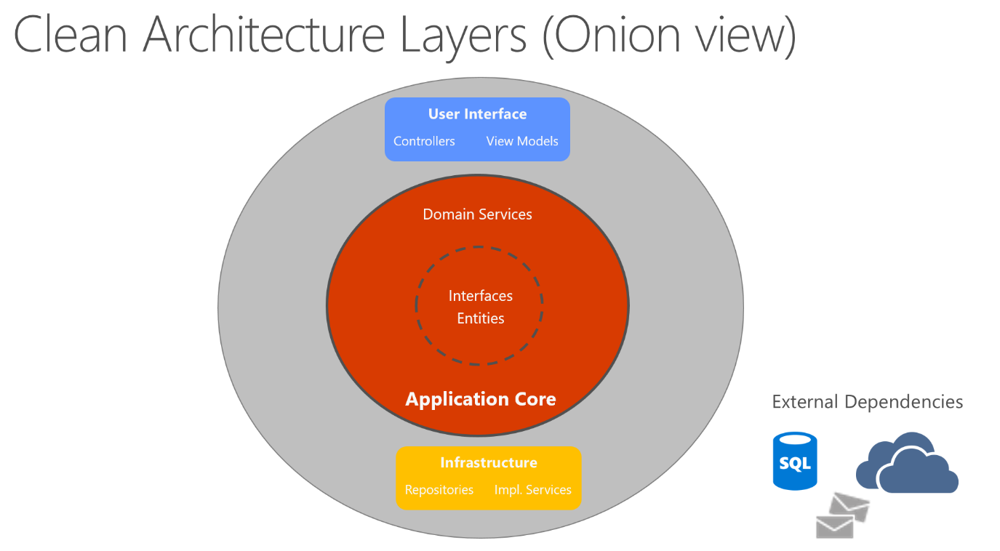
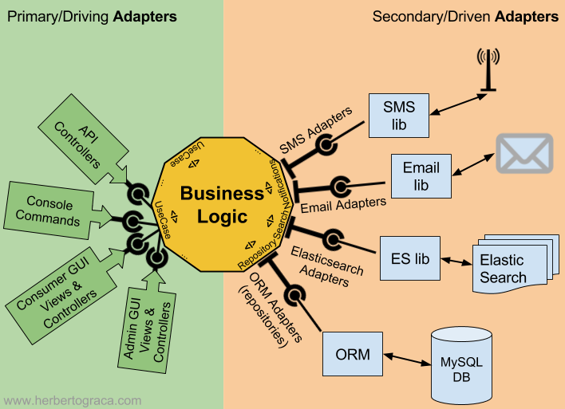

Arquitetura Hexagonal - Indrodução
Bora aprender Hexagonal?
Palestrante: Rogério Fontes / @rogeriofontes
Sobre o palestrante:
APAIXONADO EM MANEIRAS E FORMAS ÁGEIS DE CRIAR CÓDIGO FONTE. PROGRAMANDO SEMPRE TOMANDO UM BOM CAFÉ E ESCUTANDO UM BELO E PESADO ROCK`N ROLL. TRABALHA A MAIS DE 10 ANOS COM JAVA E LINUX, PASSANDO POR ANDROID, PYTHON, PHP E NODE.JS. PROFESSOR UNIVERSITÁRIO DE REDES DE COMPUTADORES, JAVA E DISPOSITIVOS MÓVEIS. JUGLEADER E CO-FUNDADOR DO UAIJUG (GRUPO DE USUÁRIOS JAVA DO TRIÂNGULO MINEIRO) E DO TRIÂNGULO HACKERSPACE. ENGENHEIRO DE MORDENIZAÇÃO - EVERIS/ITAÚ E APAIXONADO POR ESTUDOS MÚSICAIS.


Arquitetura de software
Arquitetura de software é um conceito abstrato que trata da relação entre o mapeamento dos componentes de um software e os detalhes que serm levados em conta na hora de implementar esses elementos na forma de código.
Quais os benefícios de um software bem arquitetado?
- Aumento do desempenho.
- Garantia de escalabilidade.
- Problemas grandes fracionados em partes menores e gerenciáveis.
- Facilidade para formar times de trabalho.
- Vocabulário para o debate de temas complexos.
- Visão além de Features e Funcionalidades
- Agilidade
- Erros Caros são mais facilmente evitados
Para saber mais sobre um bom design:
Big ball of mud:
Arquitetura Limpa
"The fact is that making messes is always slower than stayng clean" - Uncle Bob
Alguns temas importantes para serem estudamos mais a fundo:
Algumas tecnicas boas para fazer um bom software
DDD
Domain-Driven Design ou Projeto Orientado a Domínio é um padrão de modelagem de software orientado a objetos que procura reforçar conceitos e boas práticas relacionadas à OO
TDD
é o Desenvolvimento Orientado por Testes (Test Driven Development)
SOLID
Bom uso da orientacao a objetos:
S.O.L.I.D: Os 5 princípios da POO
Entity-Boundary-Interactor (EBI)
O objetivo da arquitetura EBI é produzir uma implementação de software independente de tecnologia, estrutura ou banco de dados. O resultado é o foco em casos de uso e entrada / saída
Microservice
Projetamos o software em torno do Domínio do Negócio, com Entrega Contínua e Implementação Independente.
Bom designs e estilos arquiteturais temos que pensar em ser:
- idependente de frameworks.
- idependente de ui.
- idependente de banco de dados.
- idependente de agente externos.
- facilmente testavel
- camadas serem respeitadas
Arquitetura e Camadas
Arquitetura e Camadas
Com o surgimento do desenvolvimento em 3 camadas, já houve uma melhor estruturação e organização da ideia de como montar um projeto de fabricação de software.
BAs camadas são:
- Camada de apresentação.
- Camada de aplicação.
- Camada de persistência.
Arquitetura Clean

Arquitetura Onion
Arquitetura Hexagonal
Arquitetura Hexagonal
Essa arquitetura e tambem conhecido como Ports e Adapters
Arquitetura Hexagonal
A arquitetura hexagonal é um estilo arquitetônico que se concentra em manter a lógica de negócios separada das preocupações externas.
A lógica do domínio é especificada em um core de negócios, que chamaremos de parte interna, o resto sendo partes externas.
O acesso externo à lógica do domínio está disponível por meio de portas e adaptadores.
Arquitetura Hexagonal

Arquitetura Hexagonal
A parte de negócios interage com outros componentes por meio desses ports e adapters. Dessa forma, podemos mudar as tecnologias subjacentes sem ter que modificar o core do aplicativo (Essa e a ideia principal)
Princípios da Arquitetura hexagonal:
Em primeiro lugar, devemos definir princípios para dividir nosso código. A arquitetura hexagonal define a parte interna e a parte externa.
Princípios da Arquitetura hexagonal:
Geralmente dividimos nosso aplicativo em três camadas; application (externo), domain (interno) e infrastructure (externo).
Application Core:
>> Domain Model <<
- Nossos dominios de Negócio
>> Ports <<
- Ajuda lógica de negócios interagir com o mundo exterior. Para conseguir isso, utilizamos algumas portas (Interfaces).
>> Service <<
Os serviços implementam as portas de entrada. Em cada método, ele usa a porta de carregamento para buscar a conta no banco de dados, por exemplo.
Em seguida, realiza as alterações no modelo de domínio. E, finalmente, ele salva essas alterações por meio da porta Salvar enviando para infraestrutura.
Adapters:
São as implementações do ports do lado externo do core
Infrastructure:
- Implementaçoes de banco de dados, webservices, etc.

[2] - https://reflectoring.io/spring-hexagonal/
[3] -https://medium.com/tableless/desvendando-a-arquitetura-hexagonal-52c56f8824c
[4] - https://programadoresbrasil.com.br/2020/04/domain-driven-design-o-que-e/